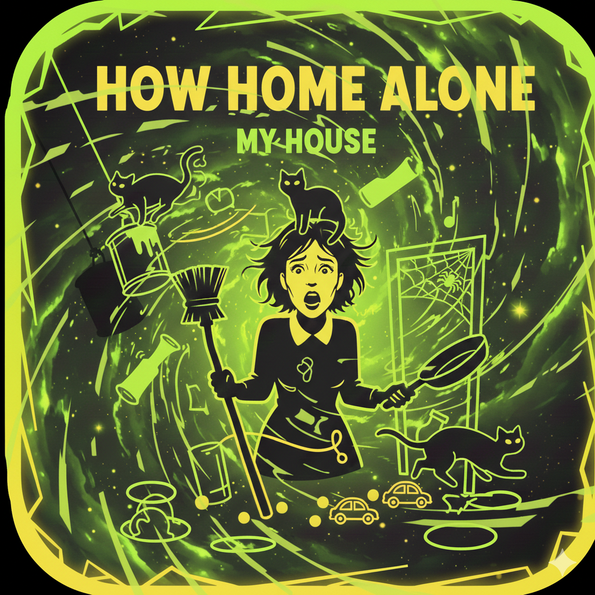
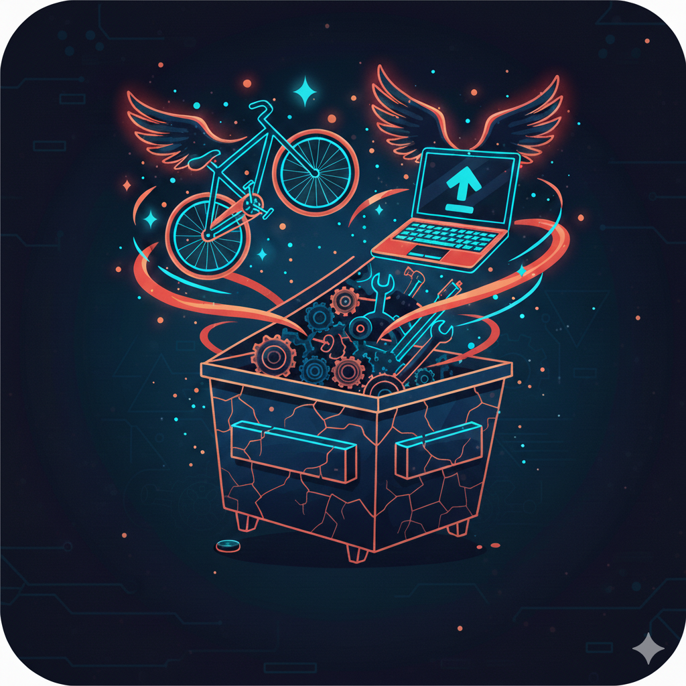

Who I am & why this exists
Building for the communities
that built me.
I've spent my career learning from incredible communities of scientists, educators, neighbors, and curious humans. Now I want to give that back — through software that makes everyday life a little more mindful, a little more connected, and a lot more free.
Every app on this site is free, contains zero ads, and collects no data. Apps should not exploit attention or harvest privacy. I believe in apps that get out of your way and quietly make something better.
These are independent apps published under my own name. The apps are vibe-coded projects with AI as a collaborator, not a replacement for intention. Each one started with a real problem I or someone I know actually had.
The framework
Four foundations. One focus.
My apps and research are organized around four basic things every human needs. It's already a big ask — so I'm starting here.
Clean, accessible hydration for every body, every day.
Reducing waste and sharing abundance in local communities.
Safe, clean, welcoming spaces — and the tools to keep them that way.
Mindfulness, habit, and connection as the quiet foundations of health.
The apps
Six apps. All free.
Each one is at a different stage. Some are live, some are being tested, some are almost there. Click any card to read the full story.
Orchid Journal
A daily mindfulness practice, disguised as an orchid tracker.
🌿 Healthcare Read more → ● Almost Ready
How Pranked My House
Scan a room with your camera — and find out how many tripping hazards it hides.
🏡 Shelter Read more → ● Android Beta
Borrow This And Improve It
Save something from the trash. Fix it. Pass it on. Reduce, reuse, rejoice.
♻️ Community Spirit Read more → ● In DevelopmentThirst Quencher
Request a free drink. No account needed. Pay it forward when you can.
💧 Water Read more → ● In DevelopmentWaste Not, Want Not
Share your extra food with neighbors. Shop what's about to go to waste nearby.
🌾 Food Read more → ● In DevelopmentWildflower Witness
Track the lifecycle of wildflowers near you — and stand up for them when they're threatened.
🌸 Community Spirit Read more →Beyond the apps
Bigger questions. Same mission.
Check out my YouTube channel, where I'm working on two bigger projects that sit behind everything else I build.
LED Globe & Viewing Portal
A physical and digital data visualization project exploring how to make planetary-scale information tangible and beautiful. The idea: if you could hold the world's data in your hands as a glowing sphere, what would you want to see? I'm documenting the entire build process — hardware, software, and the ideas behind it — on YouTube.
Watch on YouTube →AI Scorecard for Humanity
How well are the four leading AI providers actually helping humans improve water, food, shelter, and healthcare? I'm building a public scorecard to compare them honestly — not on benchmark tests, but on the outcomes that matter most to ordinary people. The methodology is evolving live on YouTube.
Follow the project →The philosophy
Why everything is free.
I've benefited enormously from free software, free education, and generous communities. Open source tools, public libraries, scientists who published their work, teachers who over-explained — I wouldn't be who I am without them.
Skyberrys apps are my attempt to put something back into that current. Every app is free because the people who would benefit most from them are often the people least able to pay. If you want to support the work, a kind word, a beta test, or a small donation via Venmo all help.
Eventually the Public Benefit Corporation I'm working toward will formalize this — selling some digital goods, accepting donations, and channeling the proceeds back into development of projects like the LED Globe, more advanced apps, and the infrastructure that keeps everything running. But the apps stay free.